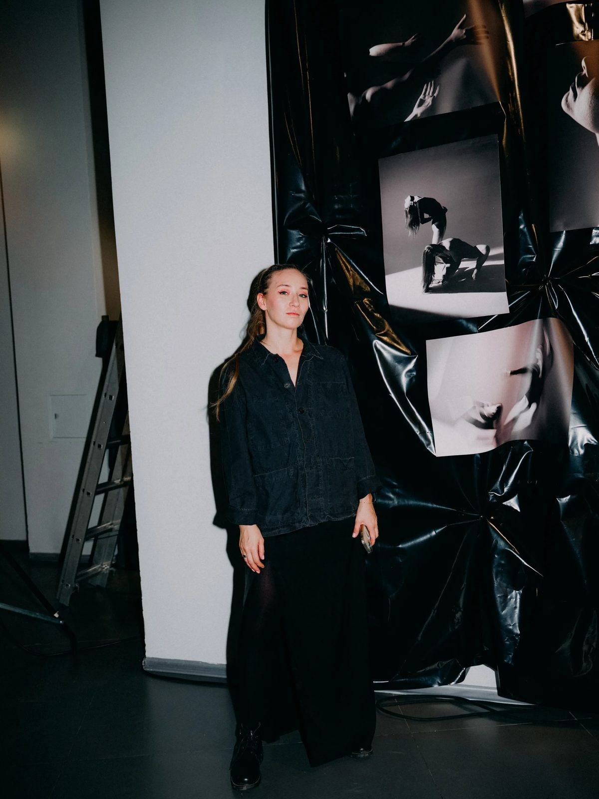

artistic director of {koroche}
Yulia
Bychkova
Director · Choreographer · Artistic director of “Koroche”
Founded dance company “Koroche” in 2020. The repertoire now holds more than five productions — all made in the language of contemporary dance.
A young, fast-growing company, {koroche} took its first tour to St. Petersburg. The show "Stories. Of the Earthly and the Heavenly" played to a warm reception at the New Stage of the Alexandrinsky Theatre.
Recipient of a Russian government grant via the Union of Theatre Workers of Russia (2022). Postgraduate at the Vaganova Academy since 2024.
“Koroche” productionsEducation and career
{ TIMELINE }Tsiolkovsky Kaluga State University
Major — Youth Work Organization.
Kaluga Regional College of Culture and Arts
Major — Choreographic Ensemble Director.
SPbGIK
St. Petersburg State Institute of Culture. Theory and practice of choreographic art.
Russian government grant
From the Union of Theatre Workers of Russia.
Vaganova Academy
Postgraduate studies, St. Petersburg.
Artistic director of “Koroche”
More than five productions in the language of contemporary dance. Toured St. Petersburg, New Stage of the Alexandrinsky Theatre.
“Koroche” productions
{ REPERTOIRE }Archaeology of the Human
An evening of short-form contemporary dance — program director.
Joint project · 2025A Guide for Novice Wanderers
With dance company “Zabava”. Director.
Physical theatre · 2024Stories. Of the Earthly and the Heavenly
New Stage of the Alexandrinsky Theatre. Director-choreographer.
Dance show · 2023Listen!
An interactive journey through personal feelings. Director.
Therapeutic performance · 2022Lamenting for Myself
A mourner moving through archetypal female images.
Story-dancing · 2022BalalaikMe
Local stories about our shared past and present.
Physical performance · 2020Gogol Is Dreaming
Associations and images from Gogol's mystical works. Choreographer.
Dance dramaturg · 2026Ritual
Past tense — present body — future dreams.